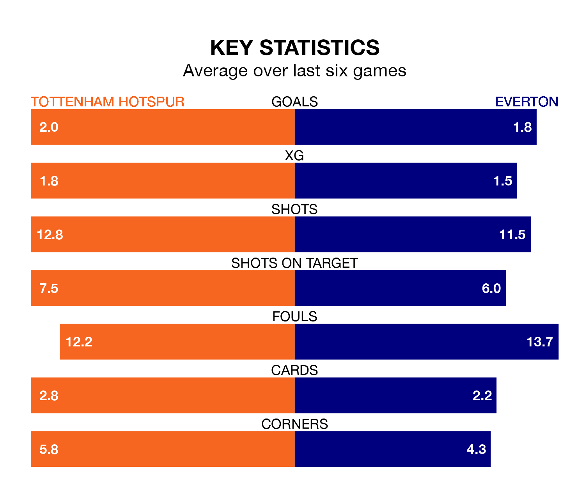

Everton visit Tottenham Hotspur at the Tottenham Hotspur Stadium on Saturday on the back of four consecutive wins in the Premier League.
Everton have picked up 15 points from their last six games, and they face a Spurs side who have also won their last two matches, and collected seven points from the last possible 18.
In Jordan Pickford, Everton can rely on one of the league's safest pair of hands. He has kept six clean sheets in his 17 appearances this season, and no 'keeper has prevented the opposition scoring more often in the Premier League.
In Spurs' net, Guglielmo Vicario has five clean sheets in 17 games.
With 35 goals in 17 games so far this season, Tottenham are scoring more than average in the league with 2.1 goals per game. And they are conceding fewer than average, letting in 23 goals at a rate of 1.4 per game.
The Toffees, meanwhile, are below average scorers, with 1.3 goals per game, compared to a league average of 1.5. They have conceded 1.2 goals per game.
In the last 10 years, Spurs and Everton have played each other on 20 occasions. Spurs won 10 of them, Everton two, and they drew eight times.
On average, Spurs scored 2.0 goals and the Toffees 0.9 in those matches.
Their last meeting was on April 3, when they played out a 1-1 draw.
The hosts are fifth in the table after 17 games, of which they have won 10 and drawn three, earning 33 points.
The away team are five places behind Spurs in 10th, with eight wins and two draws putting them on 26 points.
Spurs' last match was on December 15, a 2-0 win against Nottingham Forest, with Dejan Kulusevski and Richarlison getting the goals for Spurs.
Everton beat Burnley 2-0 last time out, on Saturday, with Amadou Onana and Michael Keane on the scoresheet.
Saturday's match will be refereed by Stuart Attwell, who has taken charge of nine Premier League games so far this season, issuing one red card and booking 45 players. He has awarded two penalties.
The last Everton game Attwell refereed was the 1-0 win away at West Ham United on October 29. He is yet to oversee a match featuring Spurs this season.
Updated: 12:43, 20/12/23